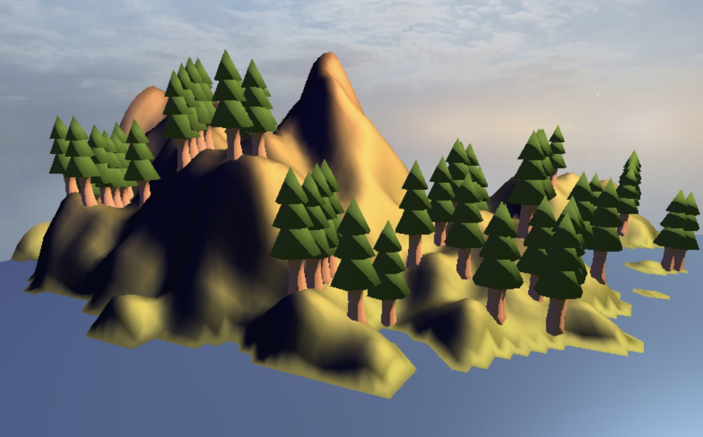
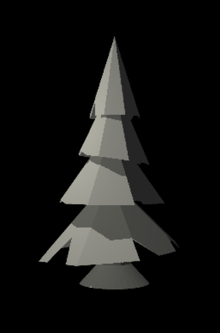
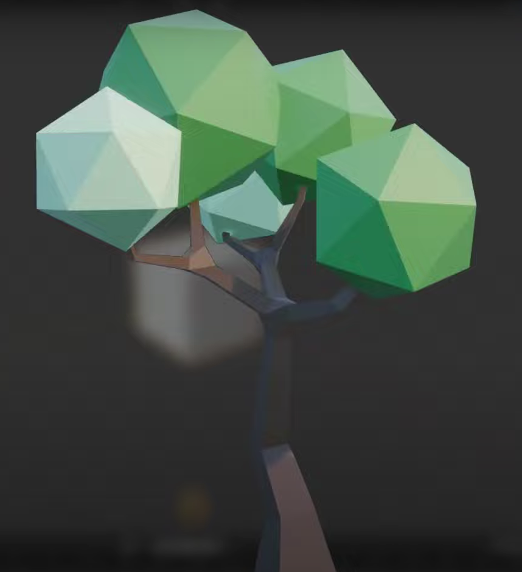
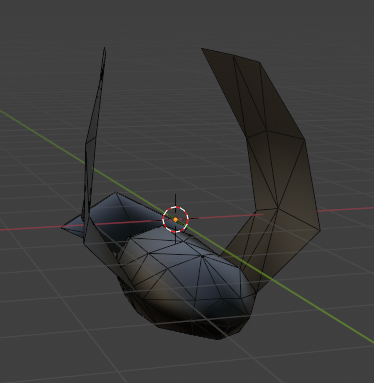
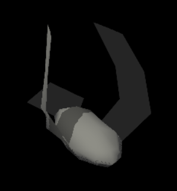
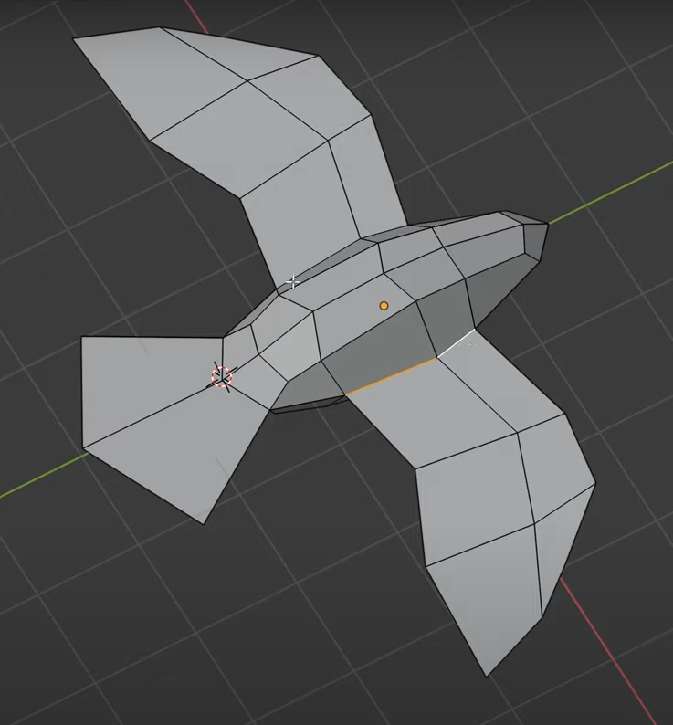
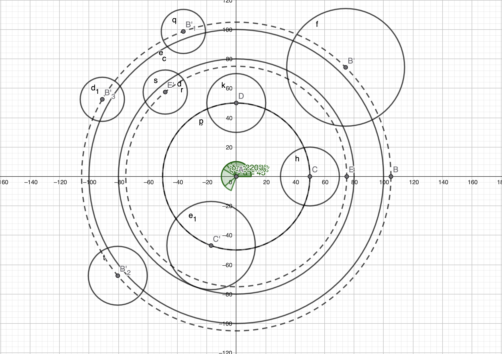

In Flight
Abstract
The goal of our project, “In Flight,” is to create a dynamic and visually engaging 3D scene showcasing bird animation and flocking behavior. We aimed to implement the boids algorithm to simulate the behavior of a flock of birds flying through a forest filled with pines swirling in between them and dodging them to create a movie-like scene.
Overview

As described earlier in the abstract, our goal was to create a scene of birds flying through a forest in a realistic manner. To accomplish this, we first thought about implementing a boids algorithm to have better and more natural bird movement than if we had just used a linear trajectory for the birds to follow. We added the classic forces you would have in a Boids like algorithm (avoidance, cohesion, alignement and containment) while also adding some more features which will be further described in our feature validation of this effect. The second feature we decided to implement was to design our own custom meshes instead of just importing ones from the Internet. We thought this would add a more unique look to our project and we did so using Blender and tutorials on how to proceed as we had almost never used this tool. The third feature we added was Normal Mapping to have more visually complex and realistic appearance for our low-polygon models. We added this with the help of a normal map for each texture used in the scene as described in the course in more detail. The fourth feature was the implementation of fog in our scene, we thought this would give a more cinematic and mysterious look to the scene while also making it seem like a real forest which also works well with the way that the boids behave where one can see them go in and out of the fog seamlessly. The fifth and final feature were Bezier curves to have smoother camera movement and thus a nicer visual result in the end which proved to further enhance our result.
Feature validation
| Feature | Adapted Points | Status |
|---|---|---|
| Mesh and Scene Design | 5 | Completed |
| Normal mapping | 10 | Completed |
| Fog | 5 | Completed |
| Boids | 20 | Completed |
| Bezier curves | 10 | Completed |
Mesh Design
Implementation
We designed our meshes in Blender, mainly by following tutorials on youtube (Pine tree tutorial, Tree tutorial, Bird tutorial). These were very helpful as it was our first/second time working with Blender and helped us achieve a good visual result while managing the object complexity.
Validation








Note: The above objects are not exhaustive of all the meshes we created.
Feature 2
Implementation
TODO
Validation
TODO
Feature 3
Implementation
TODO
Validation
TODO
Feature 4
Implementation
TODO
Validation
TODO
Feature 5
Implementation
TODO
Validation
TODO
Discussion
Additional Components
TODO
Failed Experiments
TODO
Challenges
Our first big challenge to face was the implementation of a general trajectory for the boids. Our first step was to create 2 containment cylinders both centered at the origin and of different radiuses to have the birds fly around the origin in a circle. These were not actual cylinders but were checks on the distance of the birds. If a bird was too far from the origin (ie. “outside” of our large cylinder) we would push it back closer and conversely if a bird got too close to it. Then we thought to implement a more complex trajectory in the following way : using the angle the birds formed with the Z axis to locate the bird we applied some effects to it (ex. a force vector of (0, 0, 1) to make the bird “fly” up) but the results of this proved to be robotic and unnatural, not at all what we were wishing for in the beginning. We thus opted for another approach which was to place “cylinders” across our scene as these seemed to provide the best results as the boids would dodge the obstacles in a much more natural manner. We placed the cylinders on Geogebra and thus could easily represent what was happening in our scene.
Using our visualization we made on GGB, we then were able to manually place the pine trees inside/close to the cylinders we placed to give the illusion that the birds were dodging them which created the look we were going for. This proved to be quite challenging as the process of placing the trees was quite tedious and the existing code for the birds’ trajectory had to be extensively modified (mainly the containment force which was fully reworked).
Contributions
| Name | Week 1 | Week 2 | Week 3 | Week 4 | Week 5 | Week 6 | Week 7 | Total |
|---|---|---|---|---|---|---|---|---|
| Ondrej | ||||||||
| Marc | ||||||||
| Clemens |
| Name | Contribution |
|---|---|
| Ondrej | 1/3 |
| Marc | 1/3 |
| Clemens | 1/3 |
Comments
TODO
References
Example scene from the Lord of the Rings from 1:22 to 1:35